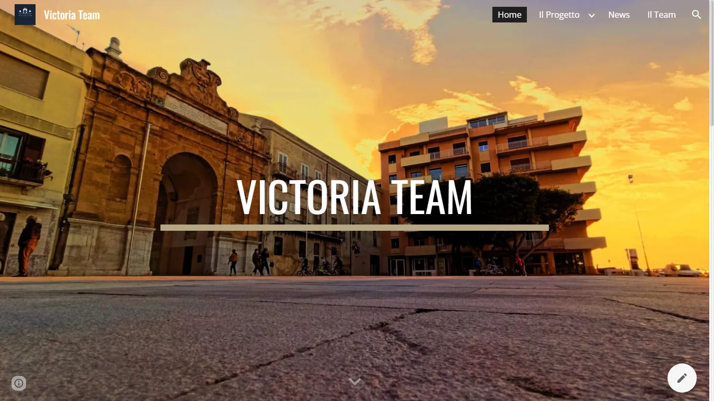
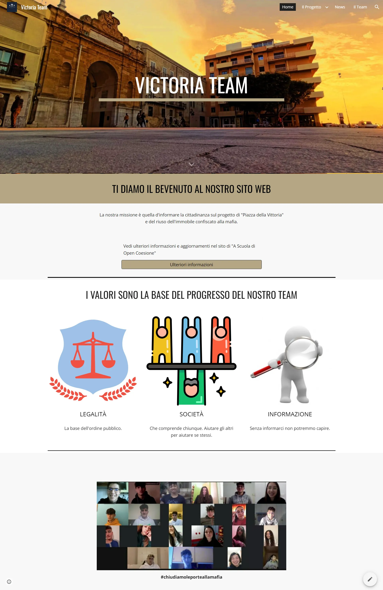
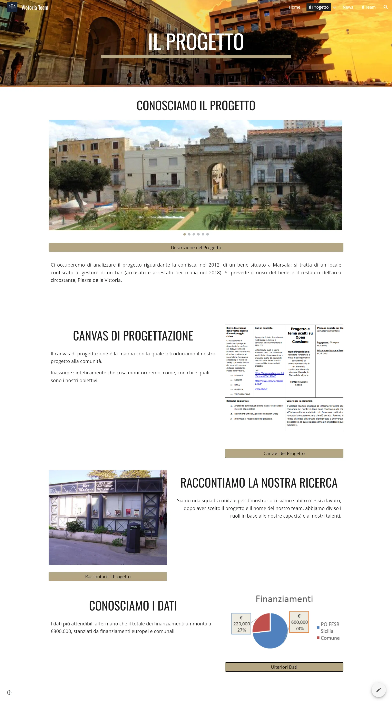
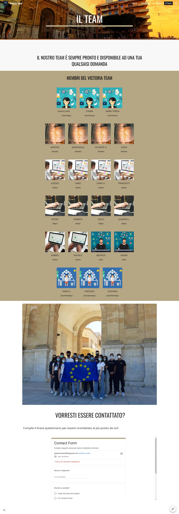

Victoria Team
Sito Web presentazione progetto

Il Progetto
Il progetto consisteva nel monitoraggio civico del rinnovamento urbano di Piazza della Vittoria a Marsala, analizzando in particolare l'efficienza e le modalità di utilizzo dei fondi europei stanziati per l'opera.
Sono stato incaricato di progettare e realizzare un sito web vetrina dedicato alla presentazione dell'iniziativa, per rendere la consultazione dei dati e delle analisi interattiva e d'impatto per la giuria del concorso nazionale "A Scuola di OpenCoesione".
Tecnologie Utilizzate
- Google Sites
- Monithon Platform
- Open Data Analysis
- Web Design
Caratteristiche Principali
- Homepage riassuntiva dei punti chiave del progetto
- Design leggero, leggibile e accessibile
- Descrizione dettagliata di tutte le fasi del monitoraggio
- Form di contatti per la ricezione di feedback civici
Screenshot Applicazione


